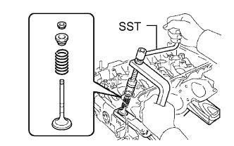
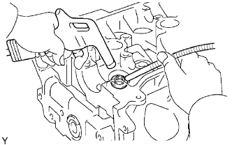

CYLINDER HEAD > DISASSEMBLY |
| 1. REMOVE VALVE LIFTER |
| 2. REMOVE VALVE |
 |
Place the cylinder head on wooden blocks.
Using SST, compress the inner compression spring and remove the valve spring retainer lock.
Remove the valve, inner compression spring and valve spring retainer.
| 3. REMOVE VALVE SPRING SEAT |
 |
Using compressed air and a magnetic finger, remove the valve spring seat by blowing air.
| 4. REMOVE VALVE STEM OIL SEAL |
 |
Using needle-nose pliers, remove the valve stem oil seal.